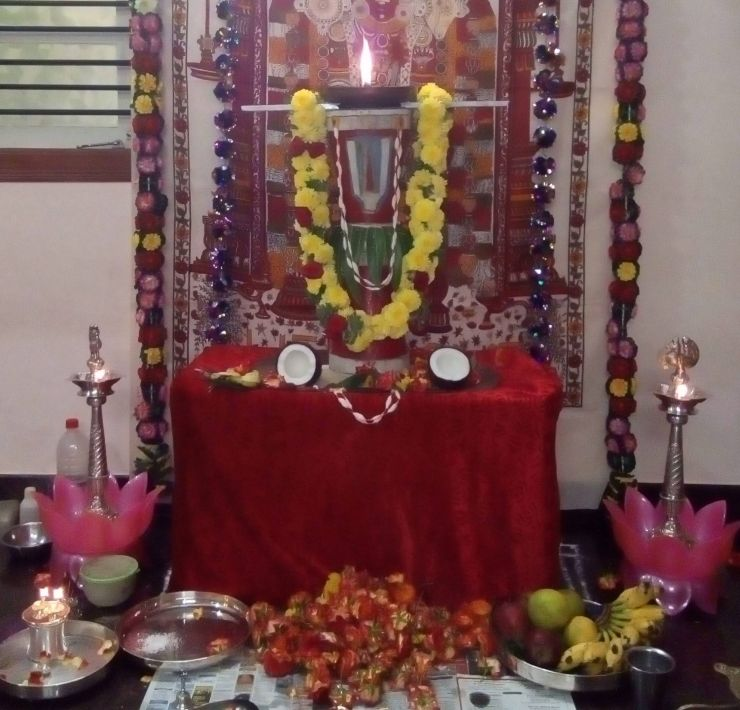
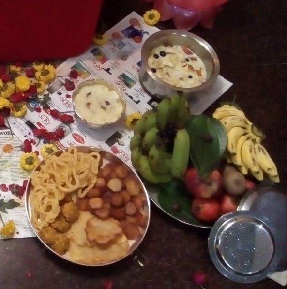

புரட்டாசி தளிகை செய்முறை
பூஜா விதானம்
Preparation
During POOJA DAY
தரையை துடைத்து - சிறிய கோலம் போட்டு - மனை போட்டு – இன்னொரு சிறிய கோலம் - வாழை இலை - 2 டம்ளர் அரிசி - 2 வெற்றிலை (முனை கிள்ளியது - எதிர்வாக்கில்) - அக்ஷிதை - 2 பூ –
கோவிந்தாவை வைக்கவும் - தலையின் மேல் சாணம் வைத்து - அதற்கு மேல் - ஒரு தாமிர (copper) தட்டு வைத்து - அதில் 350 கிராம் (10 பலம்) பசு நெய் ஊற்றி, வேட்டி துண்டில் தயாரித்த ஒரு திரியை வைக்கவும்
வயிற்றில் மாவிலை கட்டவும், மாலை போடவும்
1/2 kg சாமந்தி / ரோஜா பூஜைக்கு வைத்துக்கொள்ளவும்
முன் சிறிய பிள்ளையார் ஐ மஞ்சளில் செய்து வெற்றிலையில் வைக்கவும்
பெரிய விளக்கு – 2
பத்தி மாலை - 2 (ஒன்று கோவிந்தாவிற்கு, இன்னொன்று சிறிய பிள்ளையாருக்கு)

நைவேத்தியம்
5 பழங்கள், 1 தேங்காய், 2 வெற்றிலை
சக்கரை பொங்கல், வடை, பெருகு (தயிர்) பூரி, பஞ்சாமிர்தம், பிண்டி (அரிசிமாவு + சக்கரை) தீபம்
பஞ்ச பாத்திரம் - with water and spoon- apply turmeric, sandal, kumkum and akshadhai + 2 flowers

Other Preperation
[அனைவரும் நாமத்தை இட்டுக்கொள்ளவும்]
பிக்ஷைக்காக ஒரு காலி சோம்பு பூ சுற்றி வைத்துக்கொள்ளவும் - அதை பூஜை முடிந்த பிறகு - சிறார்களை 3 வீட்டுக்கு சென்று யாசகம் கேட்கவும் (அரை டமலர் அரிசி கிடைத்தால் போதும்)
சிறிய பிள்ளையாருக்கு பூஜை செய்து முடிக்கவும் …
ஶ்ரீ வேங்கடேஶ்வர பூஜை தொடங்கவும்
குருர் ப்ரஹ்மா குருர் விஷ்ணு குருர் தேவோ மஹேஸ்வரஹ
குருர் ஸாக்ஷாத் பரம் ப்ரஹ்மா தஸ்மை ஸ்ரீ குரவே நமஹ '
ஶ்ரீ வேங்கடேஶ்வர அஷ்டோத்தர ஶத நாமா
ஓம் ஶ்ரீ வேங்கடேஶாய நம:
ஓம் ஶ்ரீனிவாஸாய நம:
ஓம் லக்ஷ்மீபதயே நம:
ஓம் அனாமயாய நம:
ஓம் அம்ருதாஶாய நம:
ஓம் ஜக³த்³வன்த்³யாய நம:
ஓம் கோ³வின்தா³ய நம:
ஓம் ஶாஶ்வதாய நம:
ஓம் ப்ரப⁴வே நம:
ஓம் ஶேஷாத்³ரினிலயாய நம: (1௦)
ஓம் தே³வாய நம:
ஓம் கேஶவாய நம:
ஓம் மது⁴ஸூத³னாய நம:
ஓம் அம்ருதாய நம:
ஓம் மாத⁴வாய நம:
ஓம் க்ருஷ்ணாய நம:
ஓம் ஶ்ரீஹரயே நம:
ஓம் ஜ்ஞானபஞ்ஜராய நம:
ஓம் ஶ்ரீவத்ஸவக்ஷஸே நம:
ஓம் ஸர்வேஶாய நம:
ஓம் கோ³பாலாய நம:
ஓம் புருஷோத்தமாய நம:
ஓம் கோ³பீஶ்வராய நம:
ஓம் பரஸ்மை ஜ்யோதிஷே நம:
ஓம் வ்தெகுண்ட² பதயே நம:
ஓம் அவ்யயாய நம:
ஓம் ஸுதா⁴தனவே நம:
ஓம் யாத³வேன்த்³ராய நம:
ஓம் நித்ய யௌவனரூபவதே நம:
ஓம் சதுர்வேதா³த்மகாய நம: (3௦)
ஓம் விஷ்ணவே நம:
ஓம் அச்யுதாய நம:
ஓம் பத்³மினீப்ரியாய நம:
ஓம் த⁴ராபதயே நம:
ஓம் ஸுரபதயே நம:
ஓம் நிர்மலாய நம:
ஓம் தே³வபூஜிதாய நம:
ஓம் சதுர்பு⁴ஜாய நம:
ஓம் சக்ரத⁴ராய நம:
ஓம் த்ரிதா⁴ம்னே நம: (4௦)
ஓம் த்ரிகு³ணாஶ்ரயாய நம:
ஓம் நிர்விகல்பாய நம:
ஓம் நிஷ்கல்த³ங்காய நம:
ஓம் நிரான்தகாய நம:
ஓம் நிரஞ்ஜனாய நம:
ஓம் விராபா⁴ஸாய நம:
ஓம் நித்யத்ருப்தாய நம:
ஓம் நிர்கு³ணாய நம:
ஓம் நிருபத்³ரவாய நம:
ஓம் க³தா³த⁴ராய நம: (5௦)
ஓம் ஶார்-ங்க³பாணயே நம:
ஓம் நன்த³கினே நம:
ஓம் ஶங்க³தா⁴ரகாய நம:
ஓம் அனேகமூர்தயே நம:
ஓம் அவ்யக்தாய நம:
ஓம் கடிஹஸ்தாய நம:
ஓம் வரப்ரதா³ய நம:
ஓம் அனேகாத்மனே நம:
ஓம் தீ³னப³ன்த⁴வே நம:
ஓம் ஆர்தலோகாப⁴யப்ரதா³ய நம: (6௦)
ஓம் ஆகாஶராஜவரதா³ய நம:
ஓம் யோகி³ஹ்ருத்பத்³மமன்தி³ராய நம:
ஓம் தா³மோத³ராய நம:
ஓம் ஜக³த்பாலாய நம:
ஓம் பாபக்⁴னாய நம:
ஓம் ப⁴க்தவத்ஸலாய நம:
ஓம் த்ரிவிக்ரமாய நம:
ஓம் ஶிம்ஶுமாராய நம:
ஓம் ஜடாமகுட ஶோபி⁴தாய நம:
ஓம் ஶங்க³மத்³யோல்லஸ-ன்மஞ்ஜுகிங்கிண்யாட்⁴யகரண்ட³காய நம: (7௦)
ஓம் நீலமோக⁴ஶ்யாம தனவே நம:
ஓம் பி³ல்வபத்ரார்சன ப்ரியாய நம:
ஓம் ஜக³த்³வ்யாபினே நம:
ஓம் ஜக³த்கர்த்ரே நம:
ஓம் ஜக³த்ஸாக்ஷிணே நம:
ஓம் ஜக³த்பதயே நம:
ஓம் சின்திதார்த²ப்ரதா³ய நம:
ஓம் ஜிஷ்ணவே நம:
ஓம் தா³ஶார்ஹாய நம:
ஓம் த³ஶரூபவதே நம: (8௦)
ஓம் தே³வகீ நன்த³னாய நம:
ஓம் ஶௌரயே நம:
ஓம் ஹயக்³ரீவாய நம:
ஓம் ஜனார்த³னாய நம:
ஓம் கன்யாஶ்ரவணதாரேஜ்யாய நம:
ஓம் பீதாம்ப³ரத⁴ராய நம:
ஓம் அனகா⁴ய நம:
ஓம் வனமாலினே நம:
ஓம் பத்³மனாபா⁴ய நம:
ஓம் ம்ருக³யாஸக்த மானஸாய நம: (9௦)
ஓம் அஶ்வாரூடா⁴ய நம:
ஓம் க²ட்³க³தா⁴ரிணே நம:
ஓம் த⁴னார்ஜன ஸமுத்ஸுகாய நம:
ஓம் க⁴னஸார லஸன்மத்⁴யகஸ்தூரீ திலகோஜ்ஜ்வலாய நம:
ஓம் ஸச்சிதானந்த³ரூபாய நம:
ஓம் ஜக³ன்மங்க³ல்த³ தா³யகாய நம:
ஓம் யஜ்ஞரூபாய நம:
ஓம் யஜ்ஞபோ⁴க்த்ரே நம:
ஓம் சின்மயாய நம:
ஓம் பரமேஶ்வராய நம: (1௦௦)
ஓம் பரமார்த²ப்ரதா³யகாய நம:
ஓம் ஶான்தாய நம:
ஓம் ஶ்ரீமதே நம:
ஓம் தோ³ர்த³ண்ட³ விக்ரமாய நம:
ஓம் பராத்பராய நம:
ஓம் பரஸ்மை ப்³ரஹ்மணே நம:
ஓம் ஶ்ரீவிப⁴வே நம:
ஓம் ஜக³தீ³ஶ்வராய நம: (1௦8)
இதி ஶ்ரீவேங்கடேஶ்வராஷ்டோத்தர ஶதனாமாவல்தி³: ஸம்பூர்ண:
கோவிந்த நாமாவளி
கோவிந்தா ஹரி கோவிந்தா (2 times)
கோகுல நந்தன கோவிந்தா
ஸ்ரீநிவாசா கோவிந்தா
ஸ்ரீவேங்கடேசா கோவிந்தா
பக்த வத்சலா கோவிந்தா
பாகவத ப்ரிய கோவிந்தா
நித்ய நிர்மலா கோவிந்தா
நீலமேகஸ்யாம கோவிந்தா
புராண புருஷா கோவிந்தா
புண்டரீகாக்ஷா கோவிந்தா
கோவிந்தா ஹரி கோவிந்தா
கோகுல நந்தன கோவிந்தா
ஸ்ரீநிவாசா கோவிந்தா
ஸ்ரீவேங்கடேசா கோவிந்தா
நந்த நந்தனா கோவிந்தா
நவநீத சோர கோவிந்தா
பசு பாலக ஸ்ரீ கோவிந்தா
பாப விமோசன கோவிந்தா
துஷ்ட சம்ஹார கோவிந்தா
துரித நிவாரண கோவிந்தா
சிஷ்ட பரிபாலக கோவிந்தா
கஷ்ட நிவாரண கோவிந்தா
கோவிந்தா ஹரி கோவிந்தா
கோகுல நந்தன கோவிந்தா
ஸ்ரீநிவாசா கோவிந்தா
ஸ்ரீவேங்கடேசா கோவிந்தா
வஜ்ர மகுடதர கோவிந்தா
வராக மூர்த்திவி கோவிந்தா
கோபி ஜனலோல கோவிந்தா
கோவர்த்தனோத்தார கோவிந்தா
தசரத நந்தன கோவிந்தா
தசமுக மர்தன கோவிந்தா
பட்சி வாகன கோவிந்தா
பாண்டவ ப்ரிய கோவிந்தா
கோவிந்தா ஹரி கோவிந்தா (2 times)
கோகுல நந்தன கோவிந்தா
மத்ஸ்ய கூர்மா கோவிந்தா
மதுசூதனஹரி கோவிந்தா
வராக நரசிம்ம கோவிந்தா
வாமன ப்ருகுராம கோவிந்தா
பலராமாநுஜ கோவிந்தா
பௌத்த கல்கிதர கோவிந்தா
வேணுகான ப்ரிய கோவிந்தா
வேங்கடரமணா கோவிந்தா
கோவிந்தா ஹரி கோவிந்தா (2 times)
கோகுல நந்தன கோவிந்தா
சீதா நாயக கோவிந்தா
ச்ரித பரிபாலக கோவிந்தா
தரித்ர ஜனபோஷக கோவிந்தா
தர்ம ஸம்ஸ்தாபக கோவிந்தா
அனாத ரட்சக கோவிந்தா
ஆபத் பாந்தவ கோவிந்தா
சரணாகத வத்ஸல கோவிந்தா
கருணா சாகர கோவிந்தா
கோவிந்தா ஹரி கோவிந்தா (2 times)
கோகுல நந்தன கோவிந்தா
கமல தளாக்ஷ கோவிந்தா
காமித பலதாதா கோவிந்தா
பாப விநாசக கோவிந்தா
பாஹி முராரே கோவிந்தா
ஸ்ரீமுத்ராங்கித கோவிந்தா
ஸ்ரீவத்சாங்கித கோவிந்தா
தரணீ நாயக கோவிந்தா
தினகர தேஜா கோவிந்தா
கோவிந்தா ஹரி கோவிந்தா (2 times)
கோகுல நந்தன கோவிந்தா
பத்மாவதி ப்ரிய கோவிந்தா
ப்ரசன்ன மூர்த்தி கோவிந்தா
அபயஹஸ்தப்ரதர்சன கோவிந்தா
மர்த்யாவதாரா கோவிந்தா
சங்க சக்ரதர கோவிந்தா
சார்ங்க கதாதர கோவிந்தா
விரஜா தீரஸ்தா கோவிந்தா
விரோதி மர்தன கோவிந்தா
கோவிந்தா ஹரி கோவிந்தா (2 times)
கோகுல நந்தன கோவிந்தா
சாளகிராமதர கோவிந்தா
சகஸ்ர நாமா கோவிந்தா
லக்ஷ்மீ வல்லப கோவிந்தா
லக்ஷ்மண ஆக்ரஜ கோவிந்தா
கஸ்தூரி திலக கோவிந்தா
காஞ்சனாம்பரதர கோவிந்தா
கருடவாகன கோவிந்தா
கஜராஜ ரக்ஷக கோவிந்தா
கோவிந்தா ஹரி கோவிந்தா (2 times)
கோகுல நந்தன கோவிந்தா
வானர சேவித கோவிந்தா
வாரதி பந்தன கோவிந்தா
ஏழுமலைவாசா கோவிந்தா
ஏக ஸ்வரூபா கோவிந்தா
ஸ்ரீராம கிருஷ்ணா கோவிந்தா
ரகுகுல நந்தன கோவிந்தா
பிரத்யக்ஷ தேவா கோவிந்தா
பரம தயாகர கோவிந்தா
கோவிந்தா ஹரி கோவிந்தா (2 times)
கோகுல நந்தன கோவிந்தா
வஜ்ரகவசதர கோவிந்தா
வைஜயந்தி மால கோவிந்தா
வட்டிகாசுப்ரிய கோவிந்தா
வசுதேவ தனயா கோவிந்தா
பில்வ பத்ரார்ச்சித கோவிந்தா
பிட்சுக சம்ஸ்துத கோவிந்தா
ஸ்திரீபும் ரூபா கோவிந்தா
சிவகேசவ மூர்த்தி கோவிந்தா
கோவிந்தா ஹரி கோவிந்தா (2 times)
கோகுல நந்தன கோவிந்தா
பிரம்மாண்ட ரூபா கோவிந்தா
பக்த ரட்சக கோவிந்தா
நித்ய கல்யாண கோவிந்தா
நீரஜநாப கோவிந்தா
ஹதீராம ப்ரிய கோவிந்தா
ஹரி சர்வோத்தம கோவிந்தா
ஜனார்த்தன மூர்த்தி கோவிந்தா
ஜகத்சாக்ஷி ரூபா கோவிந்தா
கோவிந்தா ஹரி கோவிந்தா (2 times)
கோகுல நந்தன கோவிந்தா
அபிஷேகப்ரிய கோவிந்தா
ஆபன் நிவாரண கோவிந்தா
ரத்ன கிரீடா கோவிந்தா
ராமாநுஜநுத கோவிந்தா
சுயம் ப்ரகாச கோவிந்தா
ஆஸ்ரித பக்ஷ கோவிந்தா
நித்யசுபப்ரத கோவிந்தா
நிகில லோகேசா கோவிந்தா
கோவிந்தா ஹரி கோவிந்தா (2 times)
கோகுல நந்தன கோவிந்தா
ஆனந்த ரூபா கோவிந்தா
ஆத்யந்த ரஹிதா கோவிந்தா
இகபர தாயக கோவிந்தா
இபராஜ ரக்ஷக கோவிந்தா
பரம தாயாளோ கோவிந்தா
பத்மநாப ஹரி கோவிந்தா
திருமலை வாசா கோவிந்தா
துளசி வனமால கோவிந்தா
கோவிந்தா ஹரி கோவிந்தா (2 times)
கோகுல நந்தன கோவிந்தா
சேஷாத்ரி நிலயா கோவிந்தா
சேஷ சாயினி கோவிந்தா
ஸ்ரீ ஸ்ரீநிவாசா கோவிந்தா
ஸ்ரீ வேங்கடேசா கோவிந்தா
கோவிந்தா ஹரி கோவிந்தா (2 times)
கோகுல நந்தன கோவிந்தா
ஊதுபத்தி
"தசாங்கம் குக்குலோ பேதம் ஸூகத்திம்ச மனோஹரம். கபிலாக்ருத ஸம்யுக்தம் தூபோயம் ப்ரதி க்ருஹ்யதாம்
தூபம் ஸமர்பயாமி தூபாநன்தரம் ஆசமனீயம் ஸமர்பயாமி" புஷ்பைஹி பூஜயாமி .
நைவேத்தியம்
தேங்காய் உடைக்கவம்
வெற்றிலை முனை, பழங்கள் கிள்ளவும், தண்ணீர் தெளிக்க
ஓம் ப்ராணாய ஸ்வாஹா
ஓம் அபானாய ஸ்வாஹா
ஓம் வ்யாநாய ஸ்வாஹா
ஓம் உதானாய ஸ்வாஹா
ஓம் ஸமானாய ஸ்வாஹா
ஓம் ப்ரஹ்மணே ஸ்வாஹா
இறைவனுக்கு ஊட்டுவது போல்
10 தீப ஹாரதி
ஒன்று முதல் பத்து திரி இருக்கும் ஆர்த்தி எடுக்கவும்
ஒவ்வொரு முறையும்
(கோவிந்தா கோவிந்தா கோவிந்தா..... என்று கூறிக்கொண்டு)
கற்பூர ஹாரதி
ஓம் ராஜாதி ராஜாய ப்ரஸஹ்ய சாஹினே நமோ வயம் வைச்ரவணாய குர்மஹே
ஸமே காமான் காம காமாய மஹ்யம் கமேச்வரோ வைச்ரவணோ ததாது
குபேராய வைச்ரவணாய மஹாராஜாய நம:
கற்பூர நீராஞ்ஜனம் ஸமர்ப்பயாமி , ஆசமனியம் ஸமர்ப்பயாமி, புஷ்பைஹி பூஜயாமி .
அகண்ட தீபம்
இந்த கற்பூர ஆர்த்தியை வைத்து இறைவனின் தலைமேல் வைத்த அகண்டத்தை ஏற்றவும்
(கோவிந்தா கோவிந்தா கோவிந்தா..... என்று கூறிக்கொண்டு)
மற்றவை
பிண்டி தீபம் ஏற்றவும்
பெண்கள் ஆர்த்தி எடுத்து பாட்டு பாடவும்
முற்றிற்று